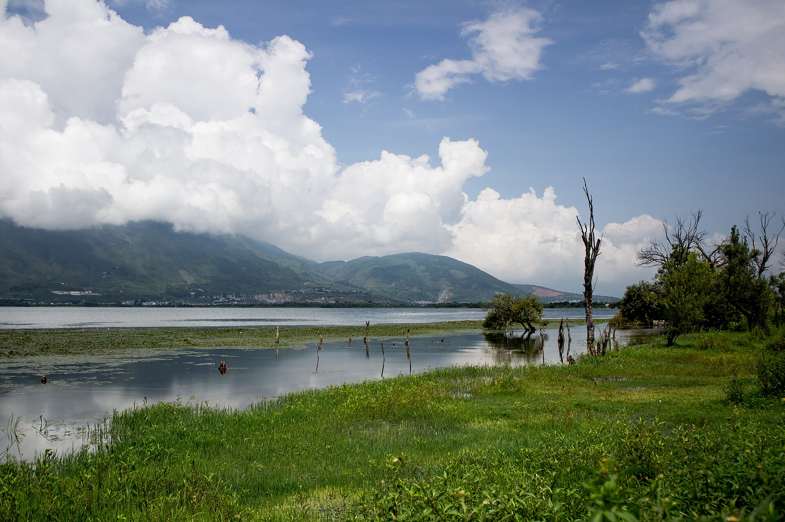
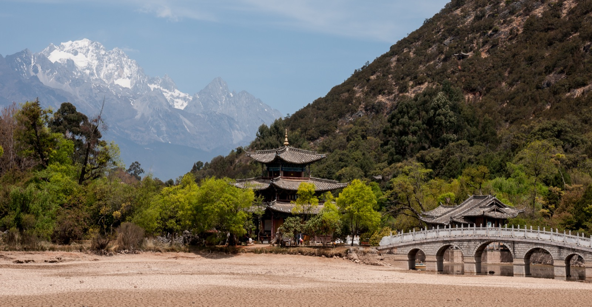
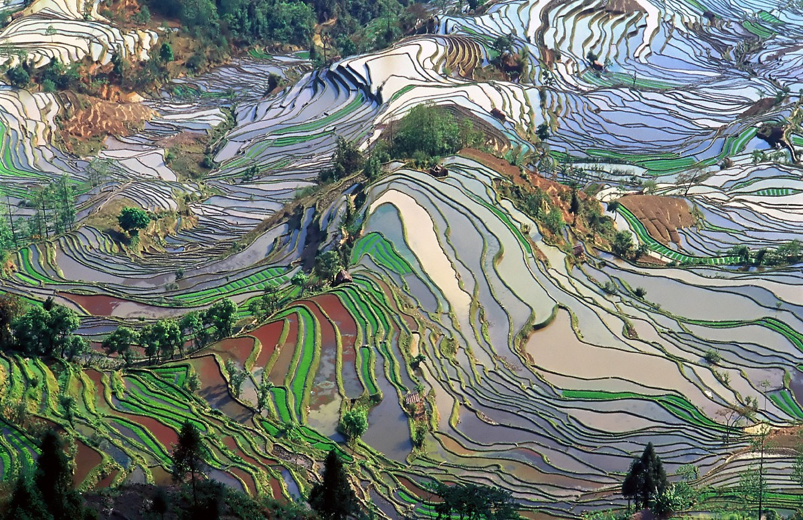

Edition No. 25 / Spring 2026
YUNNAN
Where Time Slows Down
A Travel Guide in Seven Chapters

Kunming & The Stone Forest
The Spring City earns its name every single day. While the rest of China shivers through winter or sweats through summer, Kunming sits at 1,890 metres on the Yunnan-Guizhou Plateau, wrapped in eternal mildness. Green Lake Park fills with morning tai chi practitioners. The flower market on Dounan Road moves ten million stems a day -- the largest cut flower exchange in Asia.
The Stone Forest is not merely a geological curiosity. It is a labyrinth. The limestone karst formations, some towering thirty metres, create narrow corridors where sound disappears and the sky becomes a thin blue strip overhead. Early morning is best -- arrive before nine and you will have entire pathways to yourself, the only sound the drip of water on ancient rock. The Sani people, a branch of the Yi ethnic group, hold their Torch Festival here each June.
Kunming Changshui International Airport connects to all major Chinese cities. Take Metro Line 18 directly to Stone Forest. Arrive before 9am to beat the crowds, or go after 3pm when the tour groups leave. Budget half a day.
Kunming sits at 1,890m. Most visitors feel no effects. Drink water, skip alcohol on arrival day. You will adjust within hours.
Spring City Essentials
Kunming is the gateway. Spend two days here to adjust to altitude and explore Green Lake Park at dawn, the Bird and Flower Market at midday, and the Muslim Quarter on Shuncheng Jie for dinner. The city moves slowly -- let it set your pace for the rest of Yunnan.


Dali & Erhai Lake
Dali is where travelers come to exhale. The old town sits between Cangshan Mountain and Erhai Lake, a geography so perfectly balanced it feels designed. Morning mist rolls off the lake and dissolves into the mountain flanks. By noon, the sky is a deep Yunnan blue -- the kind of blue that makes you stop walking and just look up.
Rent an electric scooter and ride the 130-kilometre lake loop. Stop in Xizhou for the finest Bai architecture -- courtyards of carved wood and whitewashed walls. In Zhoucheng, watch women dip cotton into indigo vats, a tie-dye tradition that predates the Western version by centuries. Stop at any lakeside village for erkuai grilled over charcoal. Budget a full day -- you will stop constantly.
The Bai people have their own language, cuisine, and architectural style. Their Three Courses Tea ceremony -- bitter, sweet, then reflective -- is worth seeking out. It is a philosophy in three cups.
High-speed rail from Kunming to Dali takes about two hours. From Dali station, take Bus 8 to the old town. Or share a ride for about 30 RMB.

Erhai Lake by Bike
The lake loop is one of the great rides in China. Flat stretches along the eastern shore, gentle hills on the west. Villages every few kilometres. Pack sunscreen and a hat -- the plateau sun is strong. Best months: March through May, when rapeseed fields paint the shore gold.


Lijiang & Black Dragon Pool
Black Dragon Pool is the image that sells a thousand plane tickets: the white marble bridge, the pagoda, and behind it all, the jagged white crown of Jade Dragon Snow Mountain reflected perfectly in still water. But the real Lijiang is in the side alleys. Turn off the main tourist streets and within two minutes you are in residential lanes where old Naxi women sit outside their doorways, cats sleep on warm stone, and the canals burble past in no particular hurry.
The Naxi Dongba script is genuinely unique -- pictographic symbols that resemble the things they describe, used by priests to record rituals and cosmology. The Dongba Culture Museum in the old town is small but riveting. For the Naxi orchestral performances, check schedules at the Dayan Naxi Ancient Music Association -- the musicians are elderly and the music is Tang-dynasty era, preserved here and nowhere else on earth.
Skip the crowds -- arrive at dawn when the water wheels creak in silence and canals are empty. Or head to Shuhe Ancient Town, 3km north. Same Naxi charm, a fraction of the visitors, cheaper food, better atmosphere.
The Quiet Hours
Lijiang Old Town transforms at dawn. The tourist shops are shuttered. The canals run clear. You can hear individual birds. Walk the lanes between 6 and 8am for the Lijiang that existed before the UNESCO crowds arrived. Shuhe Ancient Town, 3km north, keeps this feeling all day.


Tiger Leaping Gorge -- The High Trail
This is not a gentle stroll. The high trail climbs from Qiaotou, gains hundreds of metres through the infamous 28 Bends, and then traverses a narrow mountainside path with the gorge dropping away below. The reward is one of the most dramatic two-day hikes in Asia. Naxi guesthouses along the route serve hot meals and cold beer. The trail passes through hamlets where life has changed little in centuries.
The gorge itself is 15 kilometres long and up to 3,790 metres deep. At its narrowest, the river squeezes through a gap of 25 metres -- legend says a tiger leaped across to escape a hunter, giving the gorge its name. The sound of the rapids is constant, a deep bass rumble that reverberates off the canyon walls and enters your chest.
Good hiking shoes (the trail is rocky). Rain jacket. Headlamp. Snacks and 2L water. Start at Qiaotou, end at Tina's Guesthouse. Best months: April through June, September through November. Avoid July and August monsoon -- landslides close trail sections.
The trail reaches 2,600m. If you have been in Lijiang (2,400m) for a day or two, you will be acclimatized. Carry water and take the 28 Bends slowly.
Gorge Essentials
Good hiking shoes. Rain jacket. Headlamp for early starts. Trail snacks and two litres of water. The guesthouses along the route serve hearty Naxi food, so you do not need to carry meals. A walking pole helps on the descents. Leave your heavy bags in Lijiang.


Shangri-La & Dukezong Old Town
Dukezong is one of the best-preserved Tibetan old towns in China. The cobblestone streets were worn smooth by centuries of horse caravans on the Tea Horse Road. At the top of the hill sits the world's largest prayer wheel -- it takes several people to turn it. The old town burned in a devastating fire in 2014 and has been carefully rebuilt, but the atmosphere endures: incense smoke, the sound of monks chanting from nearby temples, yak butter tea in every shop.
Beyond the town, Napa Lake and Potatso National Park offer high-altitude meadows and pristine forests. In autumn, the meadows turn gold and black-necked cranes arrive from the north. The air is thin but impossibly clean -- you can see mountains 200 kilometres away. This is where China stops feeling like China and starts feeling like another world entirely.
Yak butter tea -- salty, buttery, addictive by the third cup. Yak meat hotpot at every restaurant. Tsampa (roasted barley flour) rolled by hand with butter tea. Spin the prayer wheel at Guishan Temple before dinner.
Shangri-La sits at 3,160m. Take it very easy on arrival day. Walk slowly, drink water, avoid alcohol. Most people adjust within 24 hours. Oxygen canisters available at pharmacies everywhere.
Altitude Awareness
Kunming: 1,890m. Lijiang: 2,400m. Shangri-La: 3,160m. The progression helps your body adjust. Take it slow on arrival, drink water, skip alcohol for the first day. Most people adapt fine within 24 hours. Oxygen canisters are sold everywhere for about 10 RMB.


Yuanyang -- Laohuzui & Beyond
Laohuzui -- Tiger Mouth -- is the most dramatic single viewpoint. The terraces sweep down in concentric curves that resemble the contour lines of a topographic map made real. From above, it looks like the mountain is breathing. The Hani irrigation system is a masterwork of engineering: forests on the mountaintop catch moisture, which filters down through villages to the terraces below, then evaporates and returns as rain. A closed loop perfected over 1,300 years.
This is the most remote destination on the Yunnan circuit, and that remoteness is part of the gift. There are no chain hotels, no tour bus parking lots. You stay in Hani villages, eat Hani food, and wake before dawn to watch the world's most beautiful agricultural landscape come alive with light. The drive from Kunming takes seven hours through winding mountain roads. It is worth every curve.
Duoyishu for sunrise (arrive before 6am). Bada for sunset panoramas. Laohuzui for the most dramatic single composition. Best season: November through April when terraces are flooded. Hire a local driver (about 300 RMB per day) -- the mountain roads are not for the faint-hearted.
Sunrise Protocol
The sunrise at Duoyishu is one of the great spectacles in China. Set your alarm for 5am. Bring a thermos of hot water. Arrive early to claim a spot at the viewpoint. When the light hits the flooded terraces, you will understand why the Hani call this place paradise on earth.
THE TABLE
A Province That Eats Like a Continent
Boiling broth sealed under a layer of oil. You add quail eggs, pork slices, chrysanthemum petals, and rice noodles one by one. The broth cooks everything before you. A ritual as much as a meal.
A specially designed clay pot with a central spout. No water is added -- the chicken cooks entirely in its own steam-distilled essence. The broth that collects is pure, golden, and restorative.
Eight to twelve varieties of wild mushrooms in a bubbling broth. Seasonal from June through October. The government issues annual safety warnings. Locals ignore them happily.
Goat's milk stretched into thin translucent sheets, wrapped around sticks, fried until crisp, drizzled with rose syrup or condensed milk. Only found in Dali and surrounding Bai villages.
Dense, chewy rice cakes grilled over charcoal until blistered, then brushed with fermented bean paste and chili. Street food at its simplest and most satisfying.
A flatbread layered with ham, scallions, and Sichuan pepper, cooked on a griddle until flaky. The Naxi version is thicker and chewier than its cousins elsewhere in Yunnan.
Pressed into dense cakes, aged for years or decades, traded historically like currency along the Tea Horse Road. The fermented variety (shou) is dark and earthy. The raw variety (sheng) is bright and evolves with age. A 30-year cake can cost more than a car.
Salty, buttery, deeply warming. Made by churning tea with yak butter and salt. An acquired taste for most visitors -- by the third cup, you are a convert. Essential fuel at 3,000 metres and above.
Best Time to Eat
Yunnan cuisine peaks at street level. Night markets in every city. The most authentic food is rarely in restaurants with English menus. Follow the crowds, watch what locals order, point at what looks good.
Mushroom Season
June through October. The wild mushroom markets in Kunming and the highlands are extraordinary -- dozens of varieties you will never see elsewhere. Buy from established vendors. The government's annual "do not eat unfamiliar mushrooms" campaign exists for good reason.
Spice Level
Yunnan food is less aggressively spicy than Sichuan but more herbal and aromatic. Expect chili, Sichuan pepper, lemongrass, mint, and an extraordinary range of fresh herbs. Say "wei la" (slightly spicy) if you want to ease in.
Know Before You Go
Best time -- March through May or September through November. Avoid the summer monsoon.
Getting around -- High-speed rail: Kunming to Dali ~2hrs, Kunming to Lijiang ~3hrs.
Payment -- WeChat Pay and Alipay everywhere. Carry some cash for remote villages.
Layers -- Weather shifts with altitude. Pack for 5C and 25C on the same day.
Language -- Mandarin basics help enormously. English is rare outside hotels.
Where every altitude tells a different story.
YUNNAN
Escape. Breathe. Slow down. Return changed.
Photo Credits
Stone Forest -- Xiquinho Silva, CC BY 2.0
Three Pagodas -- Chiu Ho-yang, CC BY-SA 2.0
Erhai Lake -- Various contributors, CC BY-SA 4.0
Lijiang Old Town -- Xiquinho Silva, CC BY 2.0
Black Dragon Pool -- Jakub Halun, CC BY-SA 4.0
Tiger Leaping Gorge -- Jason Zhang / Contributors, CC BY-SA 3.0
Songzanlin Monastery -- Contributors, CC BY-SA 4.0
Dukezong Old Town -- Contributors, CC BY-SA 4.0
Yuanyang Terraces -- Chensiyuan, CC BY-SA 4.0
Fuxian Lake -- Contributors, CC BY-SA 4.0
All images via Wikimedia Commons.
v25 -- The Final Edition